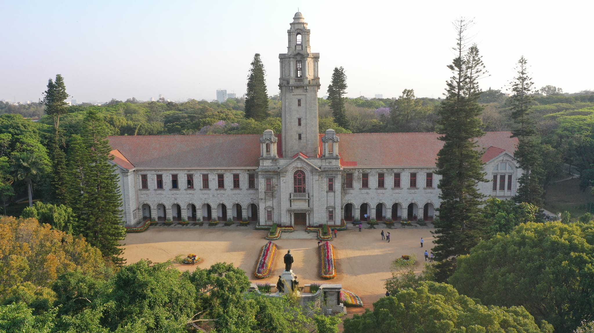

Introduction to B.Sc.
The Bachelor of Science (B.Sc.) is a 3-year undergraduate degree program that provides in-depth knowledge and practical skills in various scientific disciplines. This program is designed to foster analytical thinking, problem-solving abilities, and research skills, preparing students for a wide range of scientific careers.
By pursuing a B.Sc. degree, you'll delve into the principles of science, conduct experiments, and gain a strong foundation in your chosen field, opening doors to numerous opportunities in research, industry, and academia.
Popular B.Sc. Specializations
| Field of Study | Specializations |
|---|---|
| Physics | Theoretical Physics, Applied Physics, Astrophysics |
| Chemistry | Organic Chemistry, Inorganic Chemistry, Physical Chemistry, Analytical Chemistry |
| Biology | Botany, Zoology, Microbiology, Biotechnology, Genetics |
| Mathematics | Pure Mathematics, Applied Mathematics, Statistics |
| Computer Science | Software Development, Data Science, Artificial Intelligence, Cybersecurity |
| Environmental Science | Ecology, Environmental Management, Climate Science |
Entrance Exams for B.Sc.
Admission to B.Sc. programs in various colleges and universities may require clearing entrance exams. Some of the popular entrance exams include:
- IISER Aptitude Test (IAT)
- JAM (Joint Admission Test for M.Sc.)
- NEST (National Entrance Screening Test)
- CUCET (Central Universities Common Entrance Test)
- AIEEA UG (ICAR's All India Entrance Examination for Admission)
Each exam has its own pattern, eligibility criteria, and preparation strategies. Make sure to check the specific requirements for the colleges you are interested in.
Top B.Sc. Colleges in India
Here are some of the top institutions offering B.Sc. programs in India:
Indian Institute of Science (IISc) Bangalore
Renowned for its research and science programs, IISc offers various B.Sc. specializations with excellent faculty and facilities.
Explore IIScIndian Institutes of Science Education and Research (IISERs)
IISERs across India offer integrated B.Sc.-M.Sc. programs with a strong emphasis on research and interdisciplinary learning.
Explore IISERsUniversity of Delhi (DU)
Known for its diverse programs and distinguished faculty, Delhi University offers a wide range of B.Sc. specializations.
Explore DUJawaharlal Nehru University (JNU)
JNU is renowned for its focus on science and technology, offering various specialized B.Sc. programs.
Explore JNUBanaras Hindu University (BHU)
BHU is one of the oldest and most prestigious universities in India, offering a variety of B.Sc. programs.
Explore BHUCareer Opportunities After B.Sc.
A B.Sc. degree opens up a wide array of career opportunities in various fields. Some of the prominent career paths include:
- Research Scientist
- Lab Technician
- Data Analyst
- Environmental Consultant
- Biotechnologist
- Microbiologist
- Software Developer
- Mathematician/Statistician
- Physics/ Chemistry/ Biology Educator
- Pharmaceutical Sales
Healthcare and Pharmaceuticals:
- Biotechnologist
- Pharmacist
- Clinical Researcher
- Healthcare Analyst
Environmental Science and Management:
- Environmental Scientist
- Ecologist
- Conservation Biologist
- Environmental Policy Analyst
Information Technology:
- Software Developer
- Data Scientist
- Cybersecurity Analyst
- Network Administrator
Academia and Research:
- Research Assistant
- University Lecturer
- Scientific Writer
- Research Fellow
Indian Institute of Science (IISc) Bangalore - Average Annual Fees and Courses
The Indian Institute of Science (IISc) Bangalore, established in 1909, is one of India's premier institutes for advanced scientific and technological research and education. Renowned for its excellence in research, IISc offers various undergraduate, postgraduate, and doctoral programs in science and engineering.
Courses and Specializations
IISc offers a unique Bachelor of Science (Research) program designed to foster interdisciplinary learning and research skills in students. The program spans four years and culminates in a Bachelor of Science (Research) degree.
Curriculum
The curriculum is designed to provide a broad foundation in science in the first year, followed by specialization in the chosen major. The program emphasizes hands-on laboratory experience, research projects, and interdisciplinary learning.
Admission Process
Admission to the Bachelor of Science (Research) program at IISc is based on the candidate's performance in one of the following national entrance exams:
- KVPY (Kishore Vaigyanik Protsahan Yojana)
- JEE Main (Joint Entrance Examination Main)
- JEE Advanced
- NEET-UG (National Eligibility cum Entrance Test for Undergraduate)
Facilities and Infrastructure
IISc boasts state-of-the-art facilities and infrastructure to support its academic and research activities. Some key features include:
- Advanced research laboratories
- Central computing facilities
- Libraries with extensive collections of scientific journals and books
- Hostels and residential facilities for students
- Sports and recreational amenities
Research and Innovation
IISc is known for its cutting-edge research across various scientific disciplines. The institute actively collaborates with industry and international research organizations to drive innovation and technological advancements. Students are encouraged to participate in research projects and contribute to scientific discoveries.
Career Opportunities
Graduates from IISc are highly sought after in academia, research institutions, and industries globally. They pursue careers in:
- Research and development
- Higher education and academia
- Biotechnology and pharmaceuticals
- Information technology
- Environmental science and sustainability
- Government and private sector research labs
Notable Alumni
IISc has a rich legacy of producing distinguished alumni who have made significant contributions to science, technology, and industry. Some notable alumni include:
- Dr. C.N.R. Rao, renowned chemist and Bharat Ratna awardee
- Dr. G. Madhavan Nair, former chairman of ISRO
- Dr. Raj Reddy, Turing Award-winning computer scientist
Address: Indian Institute of Science, Bangalore, Karnataka, India - 560012
Website: IISc Bangalore
Phone: +91 80 2293 2004
Top colleges in A.P
-
1. Andhra University, Visakhapatnam
Address: Waltair Junction, Visakhapatnam, Andhra Pradesh - 530003
Website: https://www.andhrauniversity.edu.in
-
2. Acharya Nagarjuna University, Guntur
Address: Nagarjuna Nagar, Guntur, Andhra Pradesh - 522510
Website: https://www.anu.ac.in
-
3. Sri Venkateswara University, Tirupati
Address: Gandhi Road, Tirupati, Andhra Pradesh - 517502
Website: https://www.svuniversity.edu.in
-
4. Sri Krishnadevaraya University, Anantapur
Address: NH-205, Anantapur, Andhra Pradesh - 515003
Website: https://www.skuniversity.ac.in
-
5. Adikavi Nannaya University, Rajahmundry
Address: Rajah Rajah Narendhra Nagar, Rajahmundry, Andhra Pradesh - 533296
Website: https://www.aknu.edu.in
-
6. Yogi Vemana University, Kadapa
Address: Vemanapuram, Kadapa, Andhra Pradesh - 516005
-
7. Rayalaseema University, Kurnool
Address: Nandyal Road, Kurnool, Andhra Pradesh - 518002
Website: https://www.ruk.ac.in
-
8. Dr. B.R. Ambedkar University, Srikakulam
Address: Etcherla, Srikakulam, Andhra Pradesh - 532410
Website: https://www.brau.edu.in
-
9. Vikrama Simhapuri University, Nellore
Address: Kakutur, Nellore, Andhra Pradesh - 524320
Website: https://www.simhapuriuniv.ac.in
-
10. Krishna University, Machilipatnam
Address: Andhra Jateeya Kalasala Road, Machilipatnam, Andhra Pradesh - 521001
Website: https://www.krishnauniversity.ac.in
-
11. GITAM University, Visakhapatnam
Address: Rushikonda, Visakhapatnam, Andhra Pradesh - 530045
Website: https://www.gitam.edu
-
12. K L University, Guntur
Address: Green Fields, Vaddeswaram, Guntur, Andhra Pradesh - 522502
Website: https://www.kluniversity.in
-
13. Vignan's Foundation for Science, Technology & Research, Guntur
Address: Vadlamudi, Guntur, Andhra Pradesh - 522213
Website: https://www.vignan.ac.in
-
14. Sri Padmavati Mahila Visvavidyalayam, Tirupati
Address: Padmavathi Nagar, Tirupati, Andhra Pradesh - 517502
Website: https://www.spmvv.ac.in
-
15. Dr. NTR University of Health Sciences, Vijayawada
Address: NH-16 Service Road, Vijayawada, Andhra Pradesh - 520008
Website: https://www.ntruhs.ap.nic.in